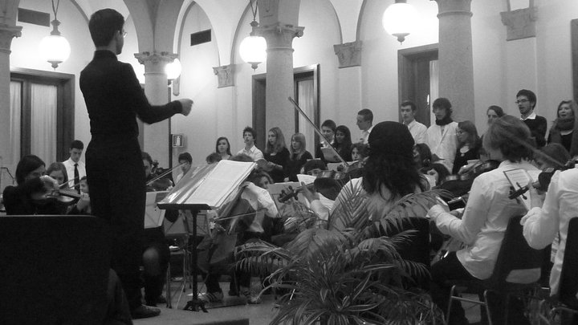

Otros proyectos y hobbies
En este espacio, comparto los proyectos no relacionados con la programación en los que he trabajado y también os comparto algunas de mis aficiones e intereses.
En este espacio, comparto los proyectos no relacionados con la programación en los que he trabajado y también os comparto algunas de mis aficiones e intereses.
Tengo un canal de Youtube donde más de 2000 suscriptores siguen los tutoriales y vídeos didácticos que he producido sobre asuntos musicales.
Como ejemplo, os dejo la playlist de un vídeocurso de dirección de orquesta compuesto de 32 capítulos que producí (grabación, edición audiovisual y promoción) para los seguidores de mi canal.
Después de investigar bastante, construí instrumentos musicales similares a los saxos y clarinetes, con materiales reciclados (tubos de PVC, palos de helado, muelles de bolígrafo) y también construí instrumentos artesanales construídos con madera.
Además de crear, editar y promocionar el contenido de mi canal de Youtube, desde 2008 colaboro a menudo como Aseor musical y editor de sonido para los vídeos que produce la la asociación Science leads to God.
Dejo aquí uno de los vídeos en que colaboré con ellos.
Desde 2013 hasta la actualidad soy "Encargado Regional de Orquesta" en la Congregación Cristiana en España.
En esa Iglesia Evangélica, a la cual pertenezco, me escogieron para ese cargo voluntario. Mis funciones son:
Mientras vivía en Barcelona estaba como responsable por las iglesias de Cataluña, Baleares, Comunidad Valenciana, Aragón, Navarra y País Vasco. Desde que me mudé a Pontevedra he quedado a co-responsable de las iglesias de Galicia, junto con los compañeros que ya estaban aquí.
En Barcelona, estuve trabajando en mi proyecto personal que denominé Acadèmia Simfònica Paolo Troni.
Ese fue mi proyecto musical que se originó de mis experiencias laborales en Italia. Desde 2015 mis alumnos participaron de 11 conciertos que pude realizar en centros cívicos de Barcelona.
Mientras vivía en Italia, tuve la oportunidad de ayudar a fundar dos orquestas: la "Orchestra ICM Giovanile di Milano", integrada por jóvenes y niños, y la "BicOrchestra - Orchestra dell'Università Bicocca di Milano", integrada por aficionados. Fue una experiencia muy enriquecedora a nivel personal y profesional poder colaborar en la creación de estas orquestas.
Desde 2006 he trabajado como profesor. Hasta 2011 enseñé lenguaje musical para adultos en la asociación musical CPSM - Corsi Popolari Serali di Musica del Conservatorio di Milano (Italia)
Antes de mudarme para Barcelona estuve desde 2010 a 2011 como profesor de composición, práctica de orquesta y música de cámara en el Progetto Musica del Liceo Classico Tito Livio di Milano. Dirigí a ochenta alumnos en diferentes actividades musicales además de organizar y planificar los ensayos. Los alumnos participantes eran de cinco clases diferentes, con edades entre 13 y 18 años.
También trabajé con atención al público: desde 2004 hasta 2011 trabajé como acomodador en el Auditorium di Milano
Además de la música y la programación, también me apasionan la astronomía y mecánica de coches. Investigando por mi cuenta sobre mi coche he podido ahorrar bastante haciendo yo mismo el mantenimiento preventivo y correctivo de mi coche. Soy un aficionado a los trenes y a la aviación aunque si tengo que viajar prefiero los medios de tierra (tren, coche o autobús).
Me gusta viajar y conducir por carretera. Ya conducí más de 100.000 kms en viajes de larga distancia por varios países de Europa (Portugal, España, Andorra, Francia, Italia, Suiza, Bélgica y Holanda).